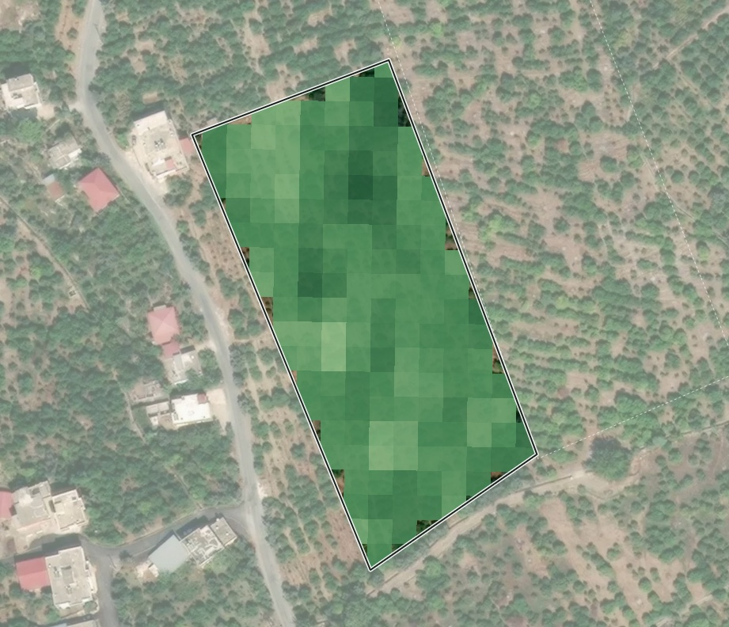

Zayıf kesim3,6 da · bahçenin %24’i · yıllardır normalin %7,6 altında
Güçlü kesim (güneydoğu)5,0 da · yıllardır normalin %5,9 üstünde · istikrar yüksek
9 Eki20 gün önce
Canlılık (NDVI)
25 m© Mapbox © OpenStreetMap © Maxar0 ortanca 0,67 0,9